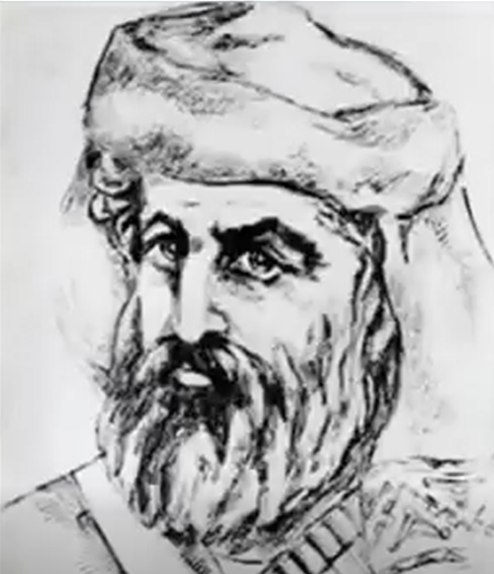

«Սասնո Անկախ Հայդուկապետը»

Սպաղանաց Մակարը Սասնո ազատագրական պայքարի ամենաինքնատիպ և հեղինակավոր դեմքերից էր։ Ծնվել է Սպաղանք գյուղում և եղել է գյուղի ռեսը (տանուտերը)։ Նա հայտնի էր իր անզիջում բնավորությամբ, ֆիդայական խիստ կարգապահությամբ և այն համոզմունքով, որ հայ ժողովուրդը կարող է հասնել անկախության սեփական ուժերով՝ առանց եվրոպական տերությունների միջամտության։
1890-ականների սկզբին Մակարը Սպաղանքում ստեղծեց զինված խումբ՝ գյուղը թուրքական հարձակումներից պաշտպանելու համար։ 1891-ին նրա եղբայրը՝ Խաչոն, Գելիեգուզանից աղջիկ փախցրեց, ինչը հանգեցրեց երկու գյուղերի միջև բախման։ Մակարը հաջողությամբ պաշտպանեց իր փոքրիկ գյուղը Սասնո ամենամեծ բնակավայրի հարձակումից, մինչև կողմերը հաշտվեցին։
1892-ին նա զինված դիմադրություն ցույց տվեց հարկեր հավաքող զորքին, ինչը դարձավ 1894 թ. Սասնո ապստամբության նախերգանքներից մեկը։ Ապստամբության ժամանակ նա ղեկավարել է Տալվորիկի պաշտպանությունը։
Սպաղանքը դարձել էր ֆիդայիների գլխավոր ապաստանը. այստեղ հյուրընկալվում էին Աղբյուր Սերոբը, Գուրգենն ու Գևորգ Չաուշը։ 1899-ի նոյեմբերին, Աղբյուր Սերոբի մահից հետո, կառավարությունը և քուրդ ցեղապետ Բշարե Խալիլը հարձակվեցին գյուղի վրա՝ Մակարին սպանելու նպատակով։ Մակարը փոքրաթիվ ուժերով հետ մղեց գրոհը։
Սակայն 1900 թ. թշնամին ահռելի ուժերով (2-3 հազար հոգի) անսպասելի հարձակվեց Սպաղանքի վրա։ Կազմակերպված դիմադրությանը հաջորդեց սոսկալի կոտորած. սպանվեցին 100-ից ավելի բնակիչներ, այդ թվում՝ Մակարի ընտանիքը։ Մակարը ճեղքեց օղակը, բարձրացավ լեռները և դարձավ վրեժի մարմնացում։ Նույն տարում Մառնիկի կիրճում նա ֆիդայիների հետ մասնակցեց Բշարե Խալիլի գլխատմանը՝ վերցնելով նրա խանչալը։
1904-ի ապստամբության ժամանակ Մակարը պաշտպանում էր Չայի շրջանը։ Նա ամենավերջինը նահանջեց՝ ցույց տալով ամենաերկար դիմադրությունը։ Չնայած Գևորգ Չաուշի հետ ունեցած սկզբունքային վեճերին, Գևորգի մահից հետո (1907 թ.) Մակարը սեփական կյանքի գնով փրկեց նրա կնոջն ու որդուն։
«Քեռի Մակարը ըմբոստ էր իր էությամբ և ամեն մարդու չէր ենթարկվեր... Ան բնավ ենթարկված չկար ո՛չ Արաբոյին, ո՛չ Մուրադին, ո՛չ Անդրանիկին, ո՛չ Գևորգին, ո՛չ էլ Սերոբին»։
Մակարը ցանկանում էր թաղվել Գևորգ Չաուշի կողքին, սակայն նրա մարմինն ամփոփվեց Գելիեգուզանի եկեղեցու բակում՝ Սասնո մյուս երկու հսկաների՝ Աղբյուր Սերոբի և Հրայր Դժոխքի կողքին։